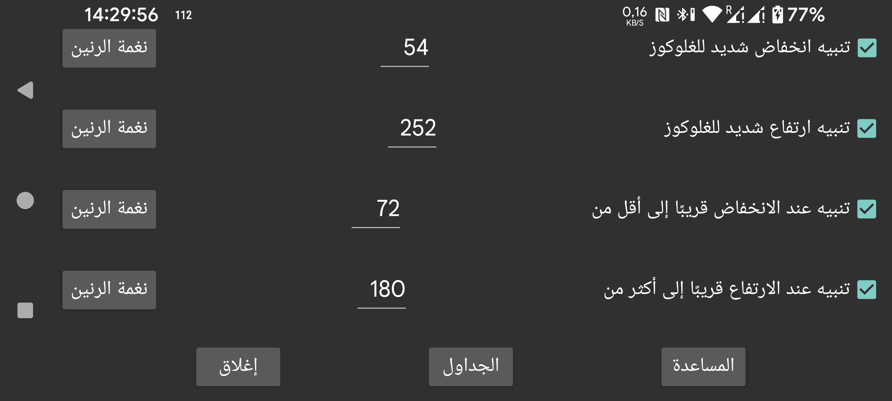

تنبيه انخفاض ثانٍ يعمل عندما تكون قيمة الغلوكوز أقل من حد تنبيه الانخفاض العادي.
تنبيه ارتفاع ثانٍ يعمل عندما تكون قيمة الغلوكوز أعلى من حد تنبيه الارتفاع العادي.
تنبيه عندما يشير هبوط الغلوكوز إلى أن القيمة ستصبح قريباً أقل من قيمة محددة.
تنبيه عندما يشير ارتفاع الغلوكوز إلى أن القيمة ستصبح قريباً أعلى من قيمة محددة.
يمكنك جدولة تفعيل ملف شخصي معيّن في وقت معيّن من اليوم. بهذه الطريقة يمكنك استخدام حدود غلوكوز أو نغمات رنين مختلفة نهاراً وليلاً، أو إيقاف نطق قيم الغلوكوز ليلاً تلقائياً.